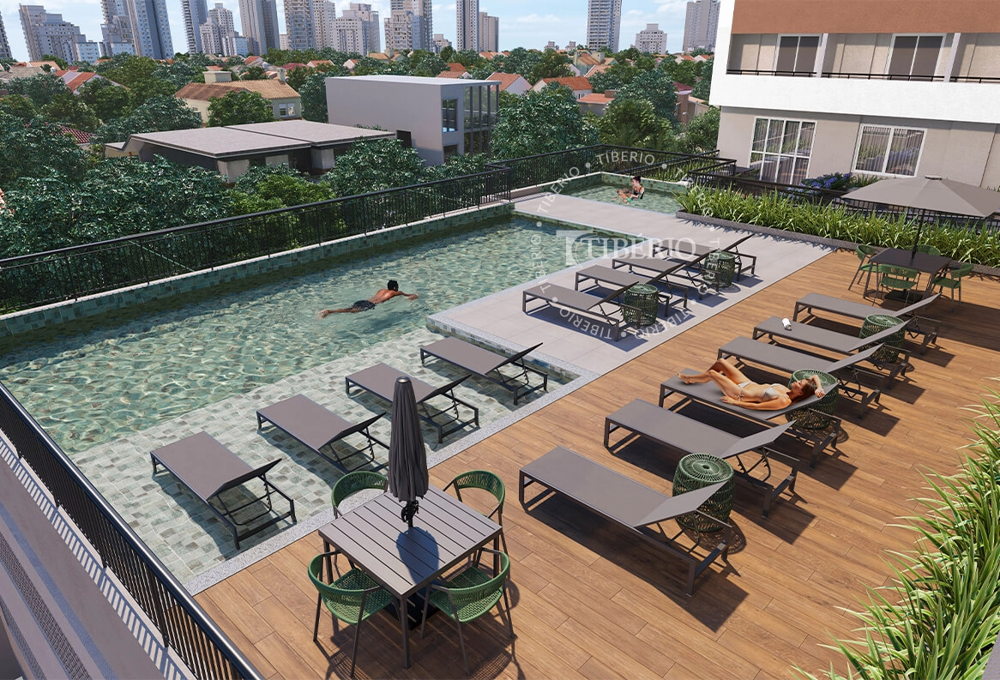
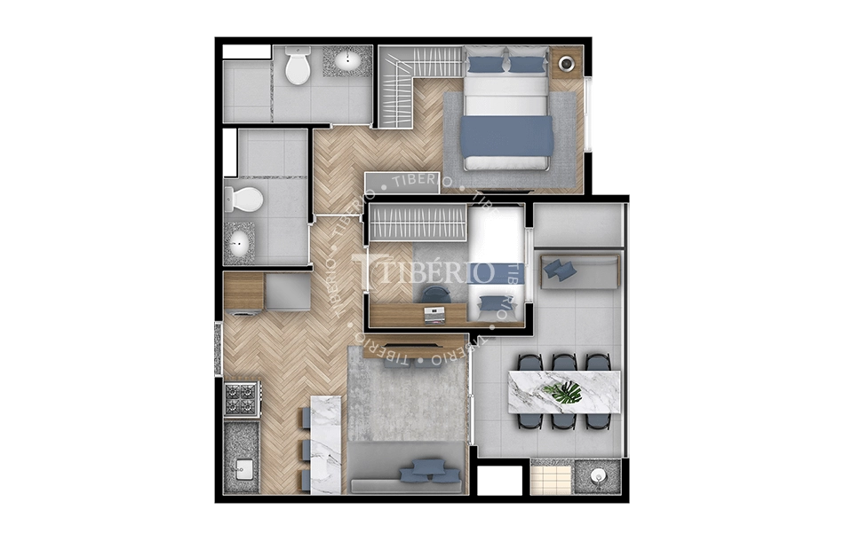
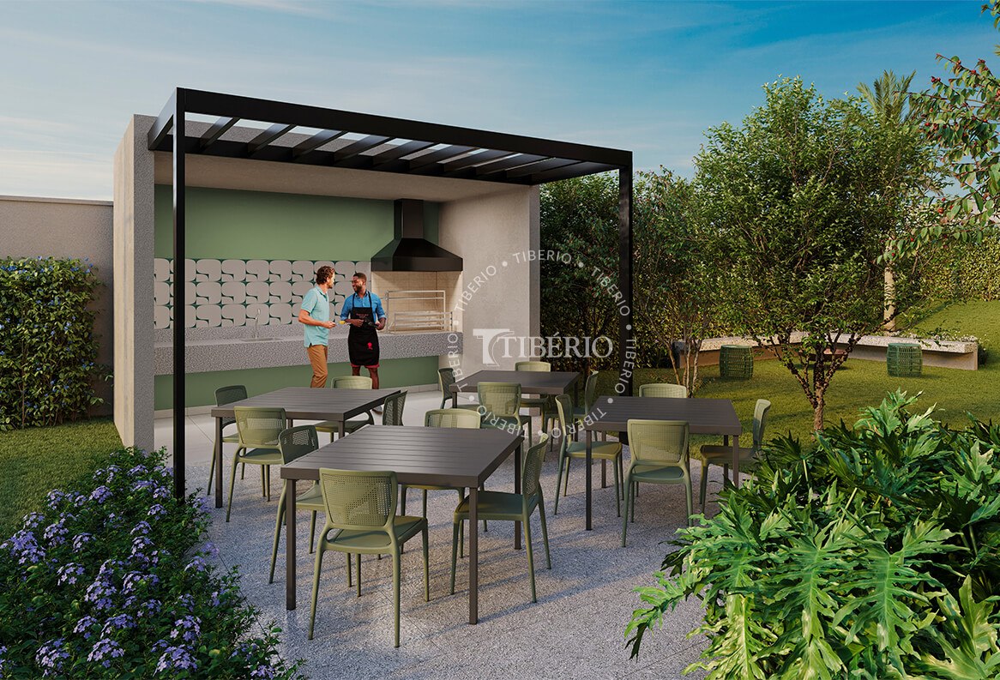
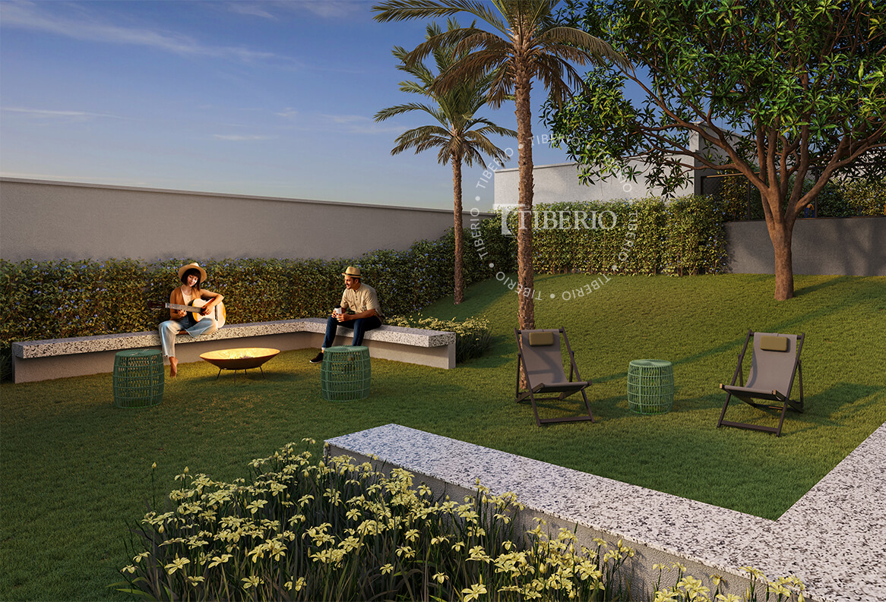

Sublime Pompéia 2 Dormitórios: apartamentos com suíte na Pompeia
Conheça os apartamentos de 2 dormitórios do Sublime Pompéia, empreendimento da Tibério na Zona Oeste de São Paulo, com opção de suíte, varanda com churrasqueira e estrutura de lazer e convivência.
CONSULTAR PLANTAS E VALORESConheça o Sublime Pompéia da Tibério
Apartamentos de 2 dormitórios em um empreendimento residencial na Pompeia, bairro tradicional da Zona Oeste de São Paulo.
O Sublime Pompéia é um empreendimento residencial da Tibério, localizado na região da Pompeia, em São Paulo. Seu projeto reúne diferentes opções de moradia e ambientes planejados para proporcionar praticidade, conforto e convivência.
Nesta página, o destaque é a tipologia de apartamentos de 2 dormitórios com opção de suíte, indicada para quem procura ambientes bem distribuídos e uma localização com infraestrutura de comércio, serviços, lazer e mobilidade.
Um dos diferenciais apresentados para esta tipologia é a varanda com churrasqueira, um espaço adicional para aproveitar momentos de descanso e receber amigos e familiares.
O empreendimento está na Avenida Pompeia, 1480, São Paulo, próximo a importantes referências da região, como Shopping Bourbon, Allianz Parque, SESC Pompeia e Hospital São Camilo.
2 dormitórios
Opções de apartamentos com dois dormitórios.
Suíte
Tipologia com opção de suíte para mais privacidade.
Varanda com churrasqueira
Espaço para convivência e momentos especiais.
Plantas dos apartamentos de 2 dormitórios
Consulte as opções de plantas, metragens e características das unidades do Sublime Pompéia.
A escolha da planta ideal depende da distribuição dos ambientes, da metragem e das necessidades de cada morador. Solicite o material atualizado para conhecer as configurações disponíveis de dois dormitórios, incluindo as opções com suíte.
A disponibilidade das unidades e as características específicas de cada planta devem ser confirmadas na tabela comercial e na documentação da construtora.
Fotos do Sublime Pompéia
Veja imagens da piscina, dos ambientes e das áreas de lazer do empreendimento.




Lazer e convivência no Sublime Pompéia
Estrutura de lazer e espaços compartilhados para diferentes momentos da rotina.
Piscina
Espaço de lazer e descanso para aproveitar os momentos livres.
Academia
Ambiente destinado à prática de atividades físicas.
Salão de festas
Espaço para encontros, comemorações e confraternizações.
Churrasqueira
Área destinada a momentos de convivência e confraternização.
Playground
Ambiente de lazer destinado às crianças.
Áreas de convivência
Espaços compartilhados para descanso e interação entre moradores.
Onde fica o Sublime Pompéia?
Avenida Pompeia, 1480 — Pompeia, Zona Oeste de São Paulo.
O Sublime Pompéia está situado em uma região com ampla infraestrutura de comércio, serviços, gastronomia, cultura e entretenimento.
Entre as principais referências próximas estão o Shopping Bourbon, o Allianz Parque, o SESC Pompeia e o Hospital São Camilo.
A região também oferece acesso a importantes vias da cidade e alternativas de transporte público. A futura estação SESC Pompeia, prevista para a expansão da Linha 6-Laranja, é uma referência de mobilidade planejada para a região, não devendo ser confundida com uma estação já em funcionamento.
Quer conhecer os apartamentos de 2 dormitórios?
Receba informações sobre plantas, metragens, valores, unidades disponíveis e condições comerciais do Sublime Pompéia. Fale diretamente com Sandro Santos.
FALAR COM SANDRO PELO WHATSAPPPerguntas frequentes sobre o Sublime Pompéia 2 dormitórios
Informações importantes para quem procura apartamento de 2 dormitórios na Pompeia.
Onde fica o Sublime Pompéia?
O empreendimento está localizado na Avenida Pompeia, 1480, no bairro Pompeia, Zona Oeste de São Paulo.
Quem é a construtora do Sublime Pompéia?
O empreendimento é da Tibério, empresa com atuação no mercado imobiliário de São Paulo.
O Sublime Pompéia possui apartamentos de 2 dormitórios?
Sim. O empreendimento possui opções residenciais de 2 dormitórios. Consulte as plantas e a disponibilidade atualizada dessa tipologia.
Os apartamentos de 2 dormitórios possuem suíte?
A tipologia apresentada nesta página destaca opções com suíte. As características específicas devem ser confirmadas na planta de cada unidade.
Os apartamentos possuem varanda com churrasqueira?
Sim. A tipologia apresentada conta com varanda com churrasqueira, conforme as informações comerciais do empreendimento.
Quais são as opções de lazer do Sublime Pompéia?
Entre os espaços informados estão piscina, academia, salão de festas, churrasqueira, playground e áreas de convivência.
O Sublime Pompéia está pronto para morar?
O empreendimento está em construção. Consulte o atendimento para informações atualizadas sobre andamento das obras e previsão de entrega.
Como consultar preços e disponibilidade dos apartamentos?
Entre em contato pelo WhatsApp para receber a tabela comercial atualizada, consultar unidades disponíveis e conhecer as condições de aquisição.
Como agendar um atendimento com Sandro Santos?
Clique no botão de WhatsApp desta página para solicitar informações e combinar um atendimento personalizado.
Conheça outras opções do Sublime Pompéia
Veja também as outras tipologias do empreendimento da Tibério:
Sublime Pompéia Studios Sublime Pompéia 3 Dormitórios